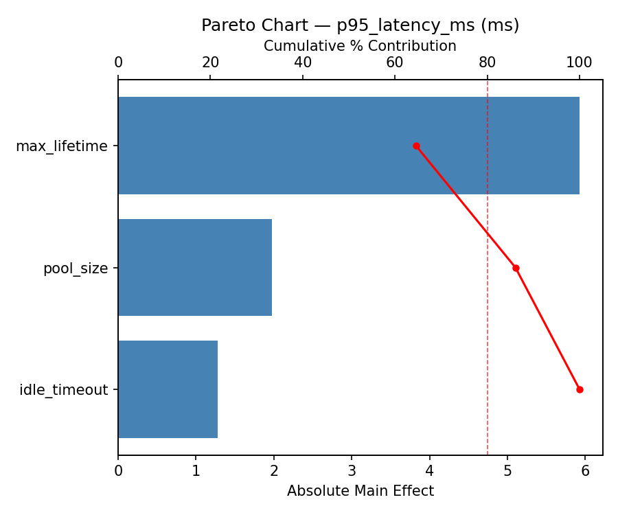
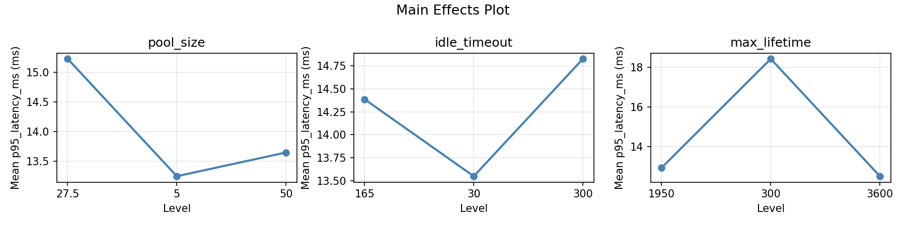
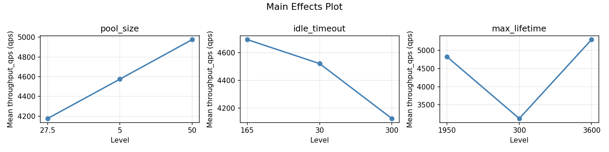
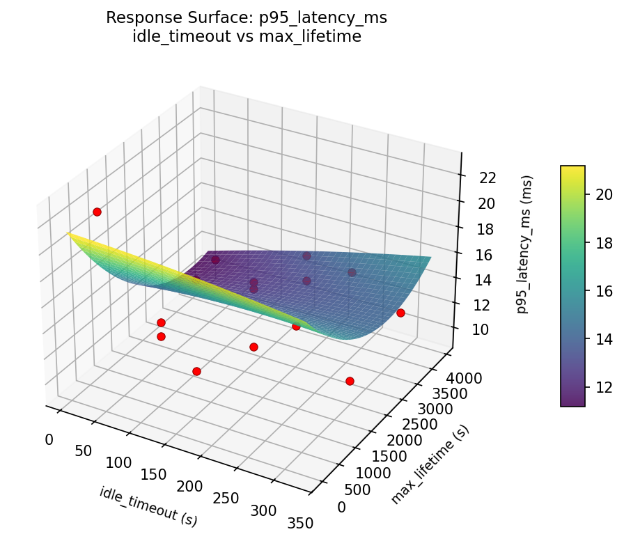
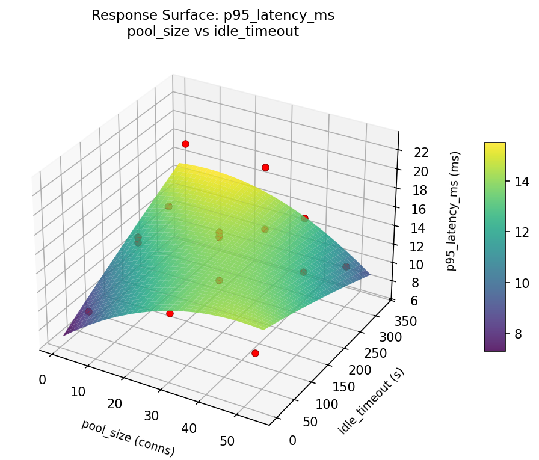
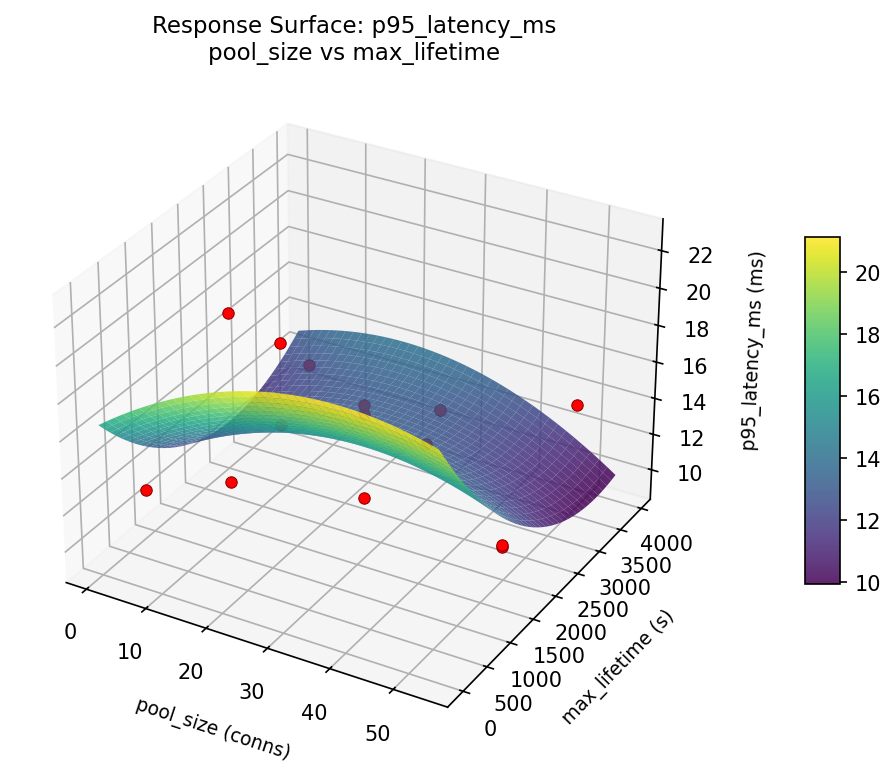
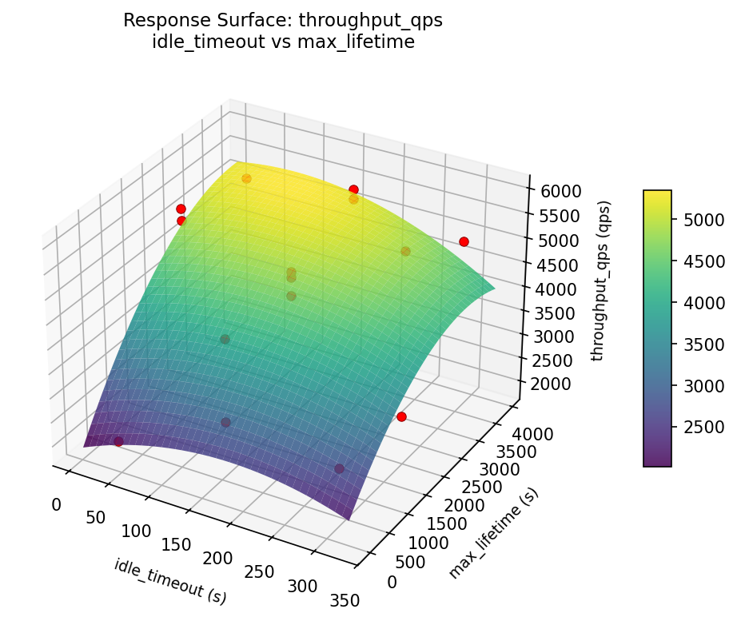
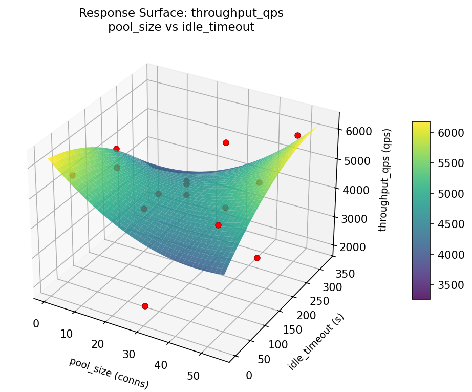
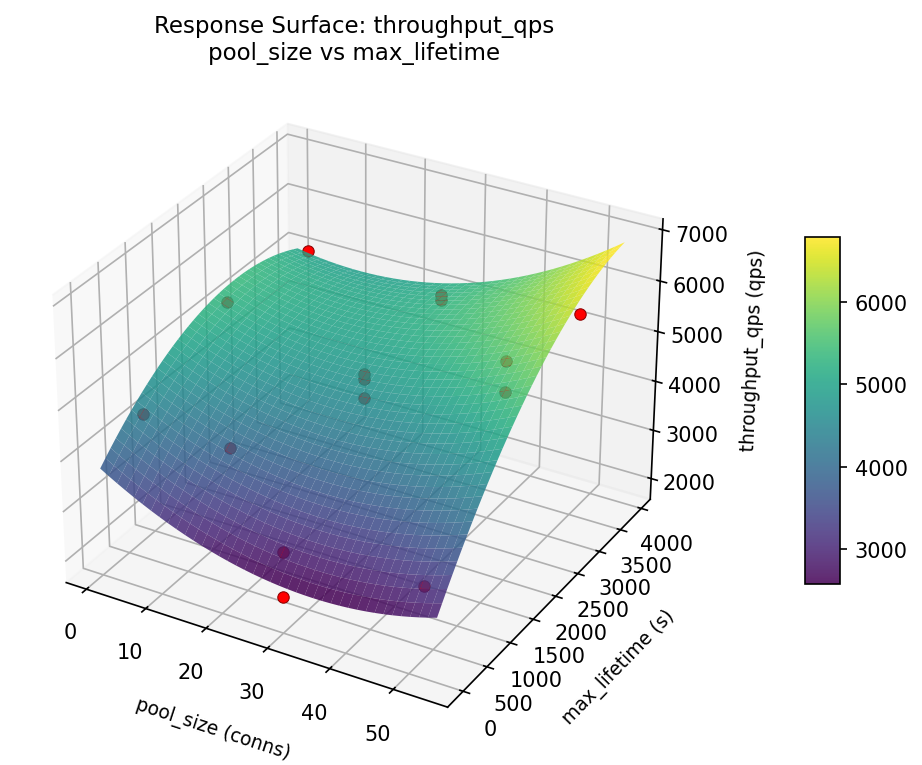

Box-Behnken design to optimize connection pool size, idle timeout, and max lifetime for throughput
| Factor | Low | High | Unit |
|---|---|---|---|
pool_size | 5 | 50 | conns |
idle_timeout | 30 | 300 | s |
max_lifetime | 300 | 3600 | s |
Fixed: db_engine = postgresql, ssl = true
| Response | Direction | Unit |
|---|---|---|
throughput_qps | ↑ maximize | qps |
p95_latency_ms | ↓ minimize | ms |
| Feature | Value |
|---|---|
| Design type | box_behnken |
| Factor types | continuous |
| Arg style | double-dash |
| Responses | 2 (throughput_qps ↑, p95_latency_ms ↓) |
| Total runs | 15 |
Generated from actual experiment runs using the DOE Helper Tool.
pareto p95 latency ms

pareto throughput qps
main effects p95 latency ms

main effects throughput qps

rsm p95 latency ms idle timeout vs max lifetime

rsm p95 latency ms pool size vs idle timeout

rsm p95 latency ms pool size vs max lifetime

rsm throughput qps idle timeout vs max lifetime

rsm throughput qps pool size vs idle timeout

rsm throughput qps pool size vs max lifetime
